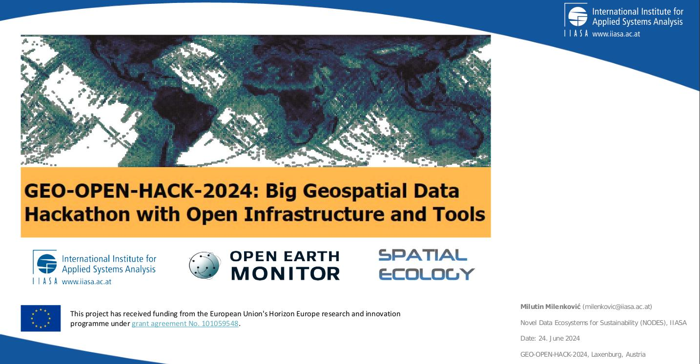

GEO-OPEN-HACK-2024

24 - 28 Jun 2024 - IIASA - Vienna
Day 1st Monday:
GEO-OPEN-HACK opening
Milutin Milenkovic, International Institute for Applied Systems Analysis (IIASA)
HPC and current European developments: European data spaces, EuroHPC, and DestinE
Raymond Oonk, SURF (Collaborating University Computing Facilities), The Netherlands
Geo-Processing with HPC
Giuseppe Amatulli, Spatial Ecology, UK; Yale University, USA
Day 2nd Tuesday:
Open Earth Monitor Cyberinfrastructure (OEMC): modern open source solutions for HPC and open science
Tom Hengl, OpenGeoHub Foundation, The Netherlands
Introduction to Apptiner
Francesco Lovergine, National Council of Research (CNR), Italy)
Geo-python with HPC
Pieter Kempeneers, European Commission, Joint Research Centre, Italy
Citizen science mobile app for measuring trees and forests
Milutin Milenković International Institute for Applied Systems Analysis (IIASA)
Day 3rd Wednesday:
Evolution of BFAST functions for characterizing land change using satellite image time series
Jan Verbesselt, Belgian Science Policy Office, Belgium
Dainius Masiliunas, Wageningen University, The Netherlands)]
Streamlining operationalisation of EO based solutions for the Green Transition using interoperability best-practices
Patrick Griffiths, European Space Agency, Italy
ML with HPC
Antonio Fonseca, www.gensaic.com
Accessing Big Vector Data on the Cloud using Arrow Parquet
Johannes Heisig, Münster University, Germany
Yu-Feng Ho, OpenGeoHub Foundation, The Netherlands
Day 4th Thursday:
openEO: open science for Earth Observation compute platforms
Prof. Edzer Pebesma, Münster University, Germany
Introduction openEO
Michele Claus, Eurac Research, Italy
Leveraging Satellite Data for High-Resolution Snow Monitoring: Scaling with openEO
Valentina Premier, Eurac Research, Italy
Day 4th, Friday:
Global-scale analysis of Sentinel-1 satellite data at the Earth Observation Data Centre
Prof. Wolfgang Wagner TU Vienna & Earth Observation Data Centre GmbH, Austria
Pangeo
Anne Fouilloux, SIMULA, Norway
Tina Odaka, CNRS-Ifremer-IRD-UBO, France
Optimizing Global Time Series ML Predictions From Modeling to Production Deployment
Leandro Parente, OpenGeoHub Foundation, The Netherlands
OEMC App demo
Santiago Ferrer
Acknowledgments
GEO-OPEN-HACK-2024 is an initiative under the Open-Earth-Monitor Cyberinfrastructure (OEMC) project aiming to lower the barrier and transfer knowledge to users dealing with big geospatial data analytics. The OEMC has received funding from the European Union’s Horizon Europe research and innovation programme (grant agreement No. 101059548).
GEO-OPEN-HACK-2024 is also an initiative in the framework of NSF-funded POSE project TI-2303651: Growing GRASS OSE for Worldwide Access to Multidisciplinary Geospatial Analytics.